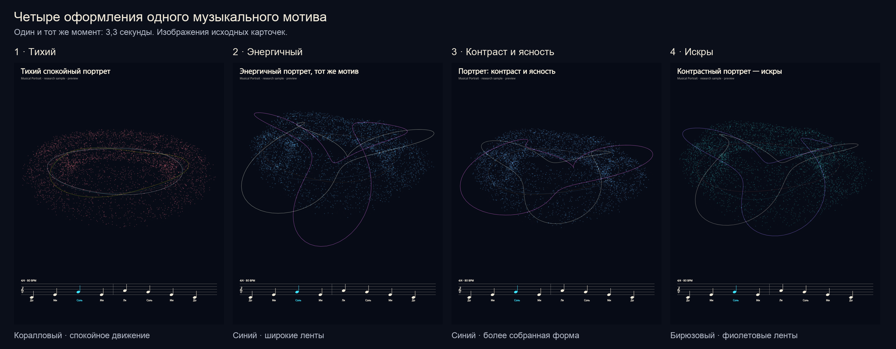
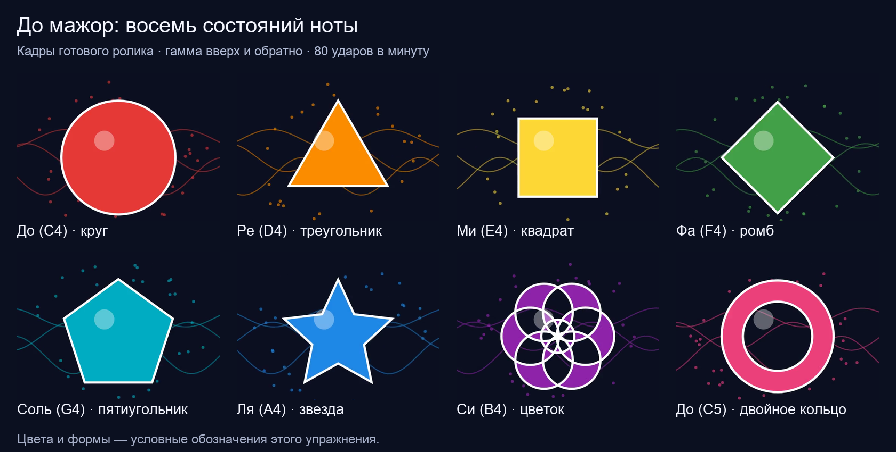

Souls of Music · Sci Sound Labs — research article
Sound Made Visible: what changes when a note changes?
Imagine you hear a single note — and at the same moment you see it: a shape that
moves because the sound moved. The note rises. It softens and fades.
A second tone joins it, slightly out of tune, and the air itself seems to pulse. What exactly
changed — the pitch, the colour of the tone, the length of its tail, or the space it rings in?
That question is the heart of Sci Sound Labs.
By the Sci Sound Labs research team, with Meta Muse. We build visualisations of musical
and numerical models in which every visible change is caused by an audible one — so a musician or a
teacher can point at the screen and say: there — that is the moment the interval widened; that pulse
is my tuning, still a little off.
A fifth, made visible (16 s, with sound). Two tones in a simple frequency
ratio draw a closed Lissajous figure; detune one and the figure begins to drift.Beats you can hear and see (16 s, with sound). Two almost-identical tones
produce a pulsing envelope; its rate equals the detuning, |f1 − f2|
(UNSW Physclips).
Where it started: a Kimi-built starting prototype, and our own questions
Our starting point was the Kimi-built starting prototype supplied to the project:
Sound Made Visible, created with Kimi, externally hosted
and working via the link. It offered three inviting modes — Sound Sculpture, Wave Explorer and
Resonance Patterns — with curated built-in tones (220 Hz, a rich tone, a pulse rhythm, a voice-like
hum) alongside microphone and file options. We explored the built-in examples only: raising a tone
reshaped the sculpture, enriching it changed the wave, and different frequencies drew different
resonance patterns. It gave us a language; measuring came next.
Resonance Patterns at 440 Hz: particles gather along the plate's nodal lines. Historical screenshot.
Open the prototype (external site, created
with Kimi). Our mini-widget proposal keeps this credit and treats embedding
as a compatibility check still to be done; the linked preview works now.
A first pilot, a useful failure, and a note-aware turn
Our first pilot rendered six short variants — four visual styles of the same motif, a C-major
solfège exercise and an 80 BPM rhythm study. Each took 21.87–49.95 seconds to produce; the whole
run lasted 5 minutes 14.82 seconds. It proved the media pipeline worked. Honest review then
downgraded it: engineering feasibility, not a validated experiment — no objective score, no baseline,
no working holdout. Comparing the four portraits showed the deeper problem: different notes inside
one broad frequency band produced nearly identical geometry, and during a rest the shape kept living
as if sound were still playing. A pause bug — and a musical lie.

One motif, four styles, the same moment (historical archival original; its original
on-screen labels predate this English edition). Beautiful — but the notes themselves were barely
distinguishable. That critique changed the work.
Watch the comparison video (12 s, with sound).The six early pilot films — complete archive (historical originals, 12 s each, with sound)
The complete first pilot, preserved as made. Each film carries a staff with a moving note
under its portrait. On-screen labels are the historical originals; English captions are ours.
1 · Quiet — a calm portrait of the motif.2 · Energetic — the same motif, brighter and faster.3 · Contrast and clarity.4 · Sparks — a contrasting portrait.5 · C-major solfège — the notes themselves.6 · Rhythm at 80 BPM — quarter notes and rests.
Status: engineering feasibility (see the review above) — kept in full because the failure
they show is what motivated the note-aware turn.
The answer was a 15-second note-aware scale: sixteen notes climb from C4 to C5 and return, with
two rests, at 80 BPM. Each of the eight steps owns a distinct colour and outline, and on rests the
form quietly fades, as silence should. This is an artificial teaching code chosen by us: a deliberate
convention (notes carry no natural colour) applied to a score known in advance, with each note's
distinguishability verified in software checks. Whether people find the code readable, and whether it
helps learning, remains untested. Compare for yourself — the earlier version is kept right beside the
final one.
Before (with sound): the earlier version — notes within one broad band are hard to tell apart. Historical original; on-screen labels predate this English edition.The note-aware scale (15 s, with sound): every note changes colour and shape; rests fade honestly.

The eight note-states: C red circle, D orange triangle, E yellow square, F green diamond,
G turquoise pentagon, A blue star, B violet flower, upper C pink double ring (archival original).
The two-hour campaign: a bounded two-loop method
The centrepiece is a completed campaign of 31 October 2026: 24 windows of exactly 300 seconds
each, 7,200.368 seconds in total, exploring how sound and form are linked in nature. The method
is a bounded two-loop adaptation, inspired by
Andrej Karpathy's autoresearch, in which an agent
adjusts training code, runs a brief five-minute training trial, and retains only changes that improve a
fixed validation score, with preparation and evaluation held constant. We adapted the principle, not
the subject: our windows test sound-and-form hypotheses rather than training language models.
Both research roles were played by muse-wonder-1.0 in separate contexts through the direct Meta API —
59 completed requests (48 inner, 11 outer). Hypotheses arrived as data only; no generated candidate code
was executed during the research. The renderer and media-export tools were authored separately by Muse
(Meta Muse), outside the research loop. Eleven outer-loop decisions were genuinely applied to
subsequent windows — evidence the method operates as designed; whether it outperforms a fixed strategy
was not measured. Our trajectory: Lissajous figures and beats → harmonic balance
H2/H1 and decay → spatial resonators (string, membrane, Helmholtz vessel, pipes) → surface waves →
invariance controls and geometric similarity.
First look (30 Oct). The Kimi-built starting prototype gives us a vocabulary: sculpture, wave, resonance pattern.
Six-variant pilot (30 Oct). Media pipeline works; review reclassifies it as feasibility, not an experiment.
Note-aware scale (31 Oct). Every note distinct in software checks, rests fade — the note/rest mapping corrected for a known score; human readability untested.
First nature run — stopped (31 Oct). Halted after six closed windows plus a partial seventh (empty responses, a non-operative condition). Repaired, discarded from all counts, restarted from zero.
Completed campaign (31 Oct). 24 × 300 s, ten families explored (nine calibrated, one inconclusive), frozen evaluator, held-out check.
Publication pieces. 24 research cards, six 11-second demonstrations, two polished English films — and this page, which also preserves the complete original collection.
What the campaign found — and what it did not
23 promising calibrations1 inconclusive10 families explored · 9 calibratedholdout max mean error 0.081218%
Ten sound and wave families were explored; nine have numerical calibrations with held-out support and
one is inconclusive. Twenty-three windows ended as promising numerical calibrations — candidate formulas
matching the frozen synthetic model closely. A held-out check (19 candidate-condition entries,
two seeded points each) kept the maximum mean relative error at 0.081218%. Those seeded points reuse the
same candidate conditions and model families, so they are not 38 independent physical measurements, and
they do not prove generalisation beyond the given synthetic evaluator. One window, on surface and
capillary waves — a fluid-surface family explored for its wave mathematics — remains inconclusive: its
numeric error was tiny (0.0184%), but the mandatory spectral check fell outside the available range, so
we decline to call it a success. Read the numbers at their true size: calibrations of well-known
relationships against synthetic models, with several late windows repeating controls and progress
plateauing. What they show is a loop that can propose, test, redirect — and refuse to claim. Helmholtz and pipe models follow the classical references
(Helmholtz,
pipes,
harmonics); the open/closed-pipe octave is
approximate in real instruments, where end corrections apply.
Selected works
Six 11-second demonstrations with synchronised sound. Press play — nothing plays by itself.
Intervals as a Lissajous figure
What changesThe ratio of two tones' frequencies.What we testedWhether the predicted closed curve matches the model — 0% mean error after an openly corrected inversion (p/q → q/p).Possible useHear a fifth or an octave and watch its figure settle; detune slightly and watch it drift.Evidence statusSynthetic calibration.
Beats — a pulse you can tune by
What changesThe detuning between two near-identical tones; the beat rate equals |f1 − f2|.What we testedThe audible envelope against the formula — 0.0575% and 0.0365% mean error in two windows.Possible use“Slow the pulse down” as a tuning game.Evidence statusSynthetic calibration; the envelope runs in real time, fast carriers are schematic.
One stroke of timbre — H2/H1
What changesThe strength of the second harmonic (H2, at twice the fundamental — not the “second overtone”) relative to the first.What we testedThe ratio against spectral measurement, including invariance controls.Possible useOne note, several characters, as rosette cards.Evidence statusSynthetic calibration; one ratio does not determine perceived timbre.
Two tails of a note — decay τ
What changesHow quickly a note fades.What we testedThat initial loudness changes volume but not τ in this exponential model.Possible useSeparating “louder” from “longer” when discussing articulation and release.Evidence statusSynthetic calibration.
Membrane — modes you can point at
What changesDimensions and mode numbers of an idealised membrane.What we testedPredicted resonance frequencies, checked numerically. The drawn node shapes are schematic renderings of the model, not independently validated physical spatial patterns.Possible usePredict where the still lines (nodes) fall before the tone sounds.Evidence statusSynthetic calibration; oscillation slowed for visibility, audio real-time.
String — tension and pitch
What changesLength, tension and density of a string.What we testedPredicted frequency against the classical model.Possible useForecast the pitch change when one parameter moves.Evidence statusSynthetic calibration; oscillation slowed for visibility, audio real-time.
Helmholtz vessel and pipes — geometry sings
What changesA vessel's volume and neck, or a pipe's length and whether its far end is open or closed.
What we testedResonance frequencies against the classical models across seven windows (experiments 7–11, 23, 24 in the catalogue).
Possible use“Same length — open or closed?” In the ideal model the pitch leaps roughly an octave; real instruments need end corrections.
Evidence statusSynthetic calibration; shown as research cards below.
Surface waves — the honest gap
What changesWavelength, depth and density in a capillary-wave model.
What we testedThe numbers matched (0.0184% error); the mandatory spectral check could not run in range.
Evidence statusInconclusive — and labelled so on experiment 12's card.
The 24 experiments
Every window of the completed campaign: 23 calibrations and 1 inconclusive result across
10 explored families (9 calibrated). “Promising calibration” means agreement with the
frozen synthetic model — several later windows repeat controls and progress plateaued, so these are
24 rounds, not 24 independent mechanisms. Cards are historical archival originals; their on-screen
labels predate this English edition, and English captions here carry the meaning.
Campaign of 31 October 2026 — 24 windows, 7,200.368 s total
Experiment 24 · Open pipe Promising calibration · mean error 0.00000000%
Where this can go
Every application we propose follows one rule: the person predicts first, then we show. Guess the
interval from its figure. Slow the beat pulse toward a stop. Say which tail lasts longer before the
curve appears. Match four sounds to four shapes. Because the answer is carried by the signal itself —
not by anyone's taste — these become conversations a Maestro can lead in a session, short vertical
films, and in time a small interactive corner of this portal (see our
mini-widget brief). Their teaching effect on real people has not yet been
tested; that is the next, human step. For the formal summary, see the jury report
(Markdown · this article in Markdown).
For the complete record, this page preserves the full original collection. Its catalogue has seven
groups: the Kimi starting prototype; the musical portrait of a melody (the six early pilot films above
and the four-portrait comparison); the note-as-colour-and-shape scale in its earlier and final versions;
six nature-of-sound films (the selected works); the 24 experiment cards; two English social films; and
the name-signature feature, which lives on the main Souls of Muse site. With the applied performance
loop below, the page holds 18 films and 24 cards in all. Archival originals keep their historical
on-screen labels, explicitly marked as historical, with English captions throughout. A short
design brief summarises the collection for future design work.
Applied direction · VJ / projection
Dynamic Visuals for Your Performance
The same love of living form, taken to the stage. Scientific visualisation and stage visuals are both
valuable directions; they simply answer different questions. This applied piece is a curated 39-second
visual montage for ambient performance projection — concerts, club nights, immersive sessions — art-directed
from licensed footage into one seamless cycle. It plays as a pre-rendered silent loop on a fixed timeline;
start it with your set or let it run throughout the show. Source footage credits below.
Muted by design. For projection, open fullscreen; the picture is letterboxed without
cropping. If your system prefers reduced motion, the loop stays still until you press play.